由 scripts/gen-anim.mjs 从 data/poses.json 生成。每格都是 <img> 引入的 SVG（SMIL 动画），能动说明放进页面后也能动。深红 = 主要发力肌群，浅红 = 辅助。
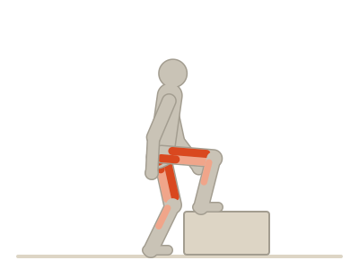
step-up · 侧视bodyweight-squat · 侧视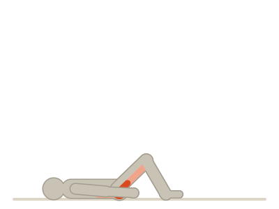
glute-bridge · 侧视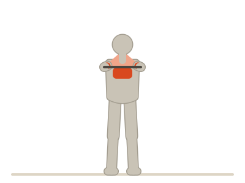
band-pull-apart · 正面
goblet-squat · 侧视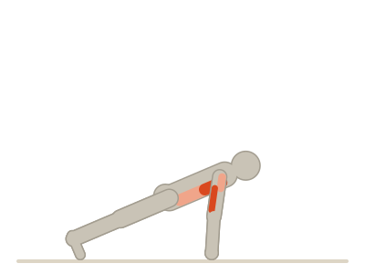
push-up · 侧视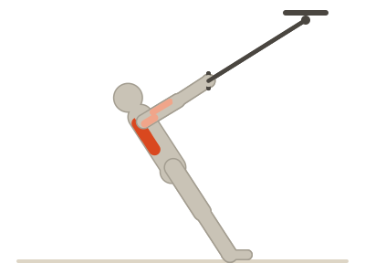
trx-row · 侧视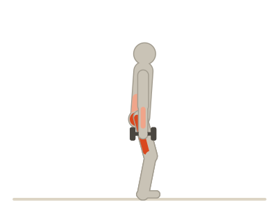
db-rdl · 侧视
cable-crossover · 正面
cable-fly · 正面
half-kneeling-press · 侧视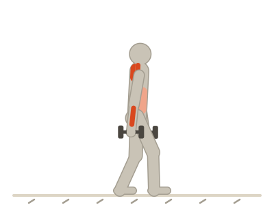
farmer-carry · 侧视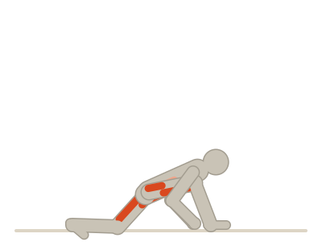
worlds-greatest-stretch · 侧视
dead-bug · 侧视
db-reverse-lunge · 侧视
db-bench-press · 侧视
pallof-press · 侧视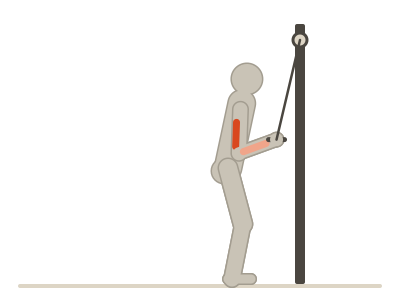
tricep-pushdown · 侧视
bicep-curl · 侧视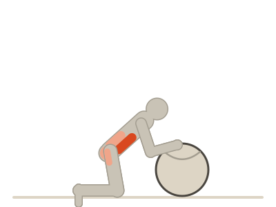
physio-ball · 侧视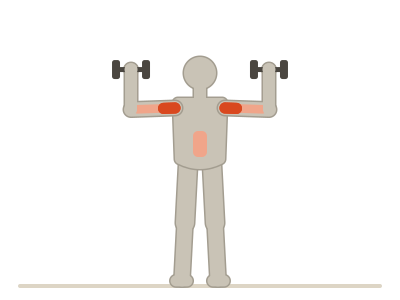
standing-press · 正面
plank · 侧视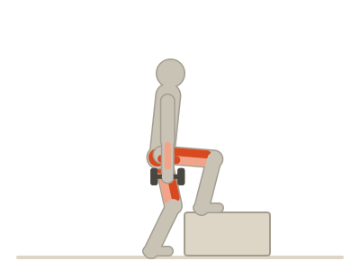
weighted-step-up · 侧视
band-walk · 正面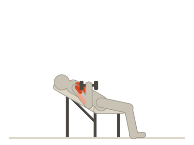
incline-db-press · 侧视
lat-pulldown · 正面
childs-pose · 侧视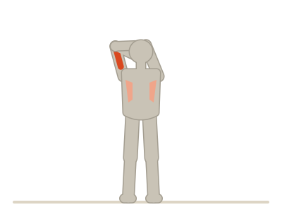
triceps-stretch · 正面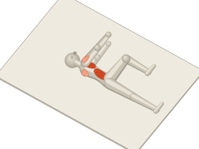
open-book · 俯视
doorway-pec-stretch · 侧视